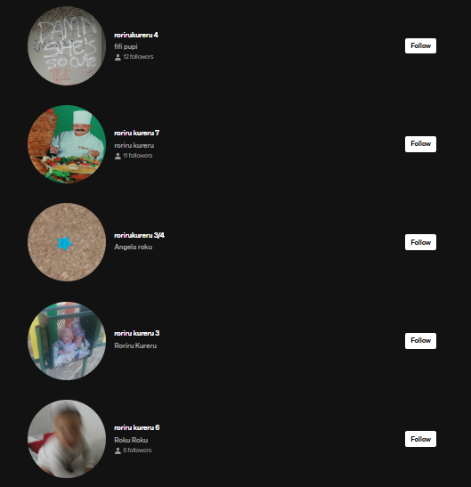

roriru kureru
roku - DJ roku
roku - ES
Buscando a rorirukureru en SoundCloud
Al principio solo compartía en SoundCloud, pequeñas pildoras a modo "notas de audio" grabadas con el móvil. Solos de guitarra y voz, los cuales posteriormente seían superadas en número, por mezclas de temas hechas con un programa DJ de móvil (DiscDj).
El problema de compartir pistas de audio en SoundCloud, es que de manera gratuita solo puedes comartir un volúmen concreto. Al superar ese volúmen, o borras pistas y resubes nuevas, o comienzas el pago de una cuenta Premium. Por la precaridad inicial del proyecto, la solución fue clara... hacer otra cuenta nueva.
Fueron muchas las cuentas, y no tuvieron un orden lógico al principio, por pérdida de contraseñas y errores puramente humanos. Así nacía un movimiento volátil, en el qué nacía un espacio/comunidad entorno a una cuenta, la cual desaparecía y volvía a aparecer con otro número al lado... "rorirukureru", "rorirukureru2","rorirukureru3".. "rorirukureru6"..."rorirukureru8"...
Al principio solo compartía en SoundCloud, pequeñas pildoras a modo "notas de audio" grabadas con el móvil. Solos de guitarra y voz, los cuales posteriormente seían superadas en número, por mezclas de temas hechas con un programa DJ de móvil (DiscDj).
El problema de compartir pistas de audio en SoundCloud, es que de manera gratuita solo puedes comartir un volúmen concreto. Al superar ese volúmen, o borras pistas y resubes nuevas, o comienzas el pago de una cuenta Premium. Por la precaridad inicial del proyecto, la solución fue clara... hacer otra cuenta nueva.
Fueron muchas las cuentas, y no tuvieron un orden lógico al principio, por pérdida de contraseñas y errores puramente humanos. Así nacía un movimiento volátil, en el qué nacía un espacio/comunidad entorno a una cuenta, la cual desaparecía y volvía a aparecer con otro número al lado... "rorirukureru", "rorirukureru2","rorirukureru3".. "rorirukureru6"..."rorirukureru8"...

roku - EN